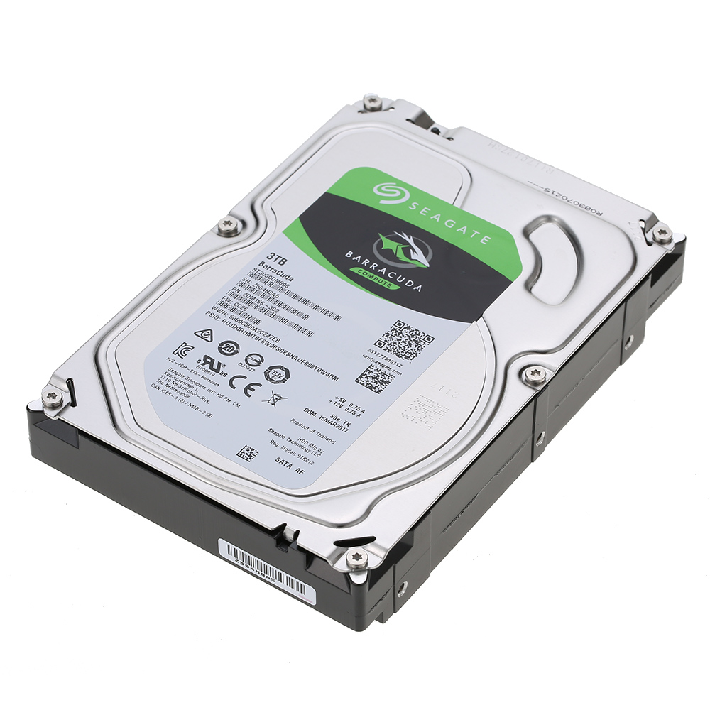

Es un dispositivo de almacenamiento masivo no volatil es más lento que la memoria Ram. Sus principales caracteristicas: Es la velocidad, la capacidad,el tipo (SDD o HD), su conexion(PATA O SATA) y tamaño(3.5 o 2.5).
|  Seagate Disco Duro 1TB Sata3 7200 rpm 64MB Barracuda |
CaracterísticasTipo: Sata 3 Serie: Barracuda Modelo: ST1000DM010 Formato: 3.5" Capacidad: 1TB Interface: Serial SATA 6Gb/s Velocidad: 7200 rpm Caché: 64MB Consumo: 5.3 W Dimensiones: 101.6 x 147 x 19.99 mm Peso: 400g |
| Atras o Volver |